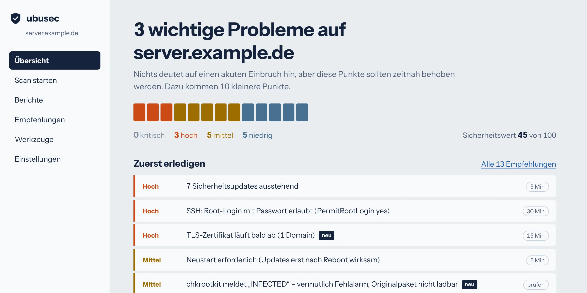
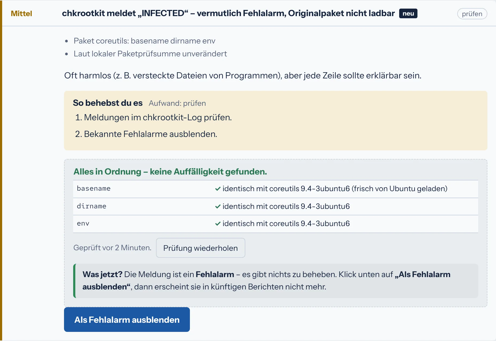
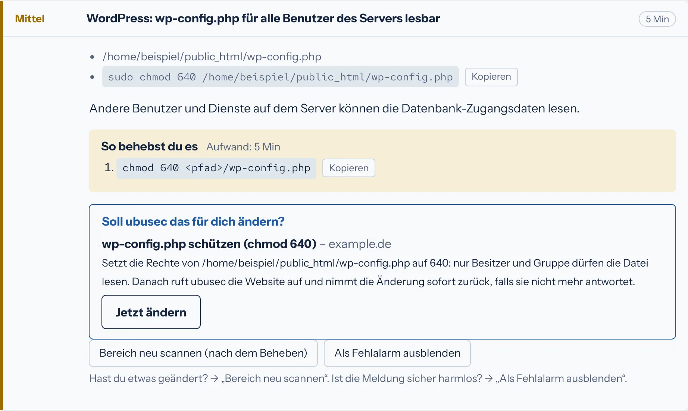

Open Source · für Ubuntu 24.04 und 26.04
Sicherheitsprüfung für Ubuntu-Server
ubusec prüft jede Nacht, ob dein Server aktuell, richtig eingestellt und sauber ist – und sagt dir in verständlichem Deutsch, was zu tun ist. Gebaut für Server mit Virtualmin, WordPress und Nextcloud.
Installieren Quellcode auf GitHub

Für wen
Für alle, die einen oder wenige eigene Server betreiben – Vereine, Schulen, kleine Firmen, Agenturen, Selbstständige – und dafür keine eigene Sicherheitsabteilung haben. Du musst kein Sicherheitsprofi sein: Jeder Punkt erklärt, warum er wichtig ist, wie lange das Beheben etwa dauert und welche Befehle du brauchst.
Wie es arbeitet
ubusec erfindet die Prüfungen nicht neu. Es bündelt bewährte Werkzeuge wie ClamAV, rkhunter, chkrootkit, Lynis und OpenSCAP, ergänzt eigene Prüfungen für Websites und Webanwendungen und fasst alles zu einem Bericht zusammen – geordnet nach Wichtigkeit, nicht nach Werkzeug.
Was geprüft wird
- Updates
- Ausstehende Sicherheitsupdates, nötiger Neustart, veralteter Kernel, automatische Updates, Versionen ohne Support apt, needrestart
- Bekannte Lücken
- Installierte Pakete mit veröffentlichter Sicherheitslücke und verfügbarem Fix OpenSCAP, Ubuntu-OVAL
- Einstellungen
- SSH, Kernel-Parameter, sudo, Konten ohne Passwort, Schutz vor Passwort-Raten Lynis, eigene Prüfungen
- Firewall und Ports
- Aktive Firewall, offene und riskante Ports, IPv6 ss, ufw, nft
- Veränderte Dateien
- Programmdateien, die vom Original-Paket abweichen; neue Benutzer, Dienste, Cronjobs und SSH-Schlüssel seit der letzten Prüfung dpkg, optional AIDE
- Rootkits und Malware
- Rootkits, versteckte Prozesse, Cryptominer, Viren und Webshells rkhunter, chkrootkit, ClamAV, optional Linux Malware Detect
- Websites und Domains
- Zertifikate und Ablaufdatum, alte TLS-Versionen, Sicherheits-Header, offen liegende
.git-,.env- und Backup-Dateien, SPF und DMARC alle Domains aus Virtualmin - Webanwendungen
- WordPress (Version, Plugins, Themes, wp-config.php, Upload-Ordner), Nextcloud, Roundcube, Mautic, PHP-Versionen und -Einstellungen wordpress.org, endoflife.date
- Offenes Relay, Verschlüsselung, Spamfilter und Greylisting, Sperrlisten, DKIM, Reverse-DNS, Server-IP auf Sperrlisten, volle Warteschlange Postfix, Dovecot
Die vollständige Liste steht in der Beschreibung auf GitHub.
Was ubusec anders macht
„Soll ich das für dich prüfen?“
Sicherheitswerkzeuge schlagen oft falschen Alarm. chkrootkit meldet zum Beispiel gewöhnliche Programme als „INFECTED“. ubusec lädt dann auf Knopfdruck das Original-Paket von Ubuntu und vergleicht Byte für Byte. Darunter steht, was jetzt zu tun ist – bei einem Fehlalarm genau ein Klick.

„Soll ich das für dich ändern?“
Viele Punkte behebt ubusec auf Wunsch selbst: wp-config.php schützen, den Datei-Editor in WordPress abschalten, PHP-Ausführung im Upload-Ordner sperren, SSH härten. Vorher wird gesichert, danach prüft ubusec, ob die Website noch antwortet, und nimmt die Änderung sonst sofort zurück. „Rückgängig machen“ geht jederzeit.

- Empfehlungen zum Mitnehmen: als Excel-Tabelle zum Abhaken, zum Drucken oder als anonymisierte Fassung, die du ohne Server-Namen und Pfade einer KI zeigen kannst.
- Schnell im Alltag: Der tägliche Schnellscan prüft nur Dateien, die sich seit dem letzten vollständigen Virenscan geändert haben; der gründliche Vollscan läuft sonntags.
- SSH-Schlüssel ohne Aussperren: Anleitung für Windows, Mac, Linux und iPhone, Schlüsselverwaltung im Browser, und die Umstellung erst, wenn eine Anmeldung mit Schlüssel geklappt hat.
Installation
Auf dem Server als Benutzer mit sudo-Rechten. Die aktuelle Versionsnummer steht unter Releases.
VER=1.5.19
curl -fLO https://github.com/chrismey-71/ubusec/releases/download/v$VER/ubusec-$VER.tar.gz
curl -fLO https://github.com/chrismey-71/ubusec/releases/download/v$VER/SHA256SUMS
sha256sum -c SHA256SUMS
tar xzf ubusec-$VER.tar.gz && cd ubusec
sudo ./ubusec --install --with-webDas installiert die Prüfwerkzeuge, plant den nächtlichen Scan ein, legt den Ausgangszustand des Servers fest und richtet einen Benutzer für die Weboberfläche ein. Die Weboberfläche erreichst du anschließend über einen SSH-Tunnel:
ssh -L 8765:127.0.0.1:8765 root@dein-serverDanach im Browser http://127.0.0.1:8765 öffnen. Später aktualisieren:
sudo ubusec --update
Und wie sicher ist ubusec selbst?
- Die Weboberfläche lauscht nur auf dem Server selbst (127.0.0.1) und läuft ohne Root-Rechte. Anmeldung mit Passwort, auf Wunsch mit zweitem Faktor.
- Aufträge aus der Weboberfläche gehen über eine Warteschlange; nur fest eingebaute, streng geprüfte Aktionen werden ausgeführt, jede wird protokolliert.
- Releases und nachgeladene Werkzeuge werden mit Prüfsummen kontrolliert. ubusec aktualisiert sich nie selbst ohne dein Zutun.
- Der Quellcode ist offen und überschaubar: ein Bash-Skript und einige Python-Dateien. Die Weboberfläche braucht nur Flask und Waitress aus den Ubuntu-Paketquellen.